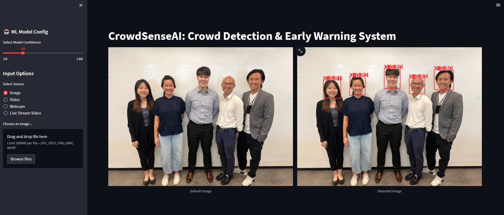
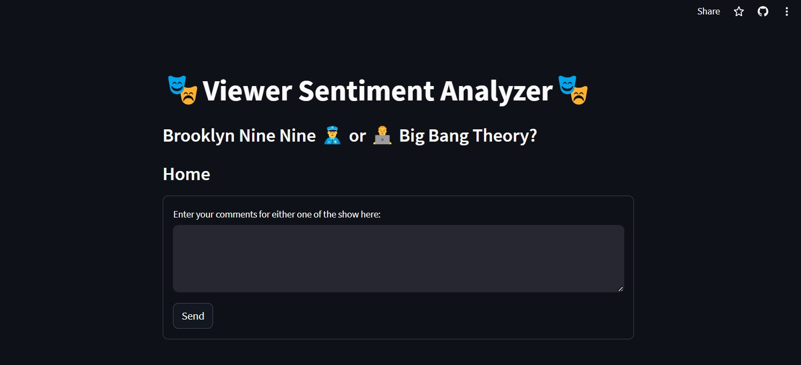
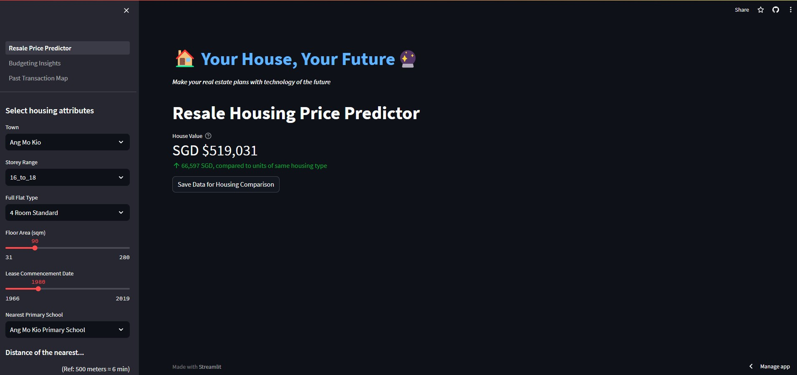
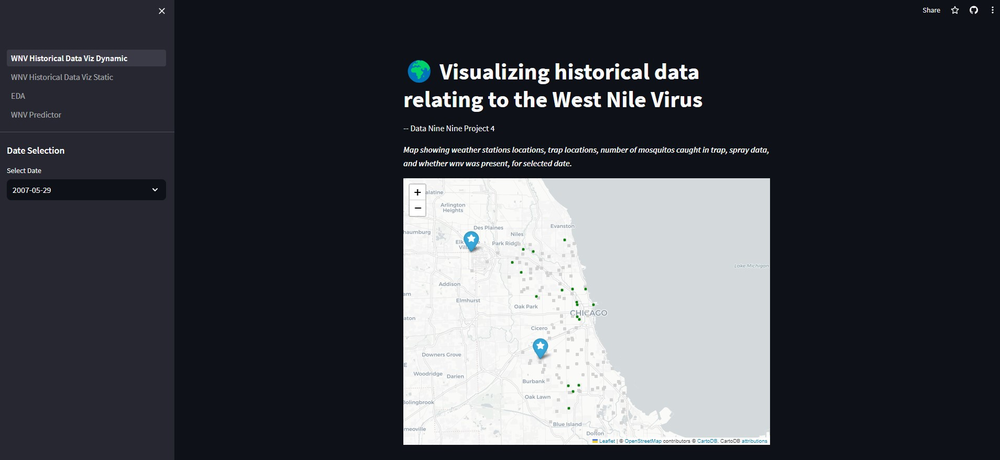

As a Certified Data Scientist and Lead Digitalisation Engineer at ST Engineering with a strong foundation in Aerospace engineering,
I bring a unique blend of analytical prowess and practical problem-solving. My toolkit includes Python, SQL, C++, Pandas, Scikit-Learn,
Tableau, Power BI, and UiPath, enabling me to drive efficiency and innovation through data-driven automation and advanced analytics.
I'm committed to continuous growth and delivering tangible value, embodying my motto: "Find a way or make one."
Data Science Projects
Below are some Data Science projects that I have done during my time at General Assembly.

CrowdSenseAI: Avert Crowd Crushing with Deep Learning
Given a timeframe of less than 4 weeks, I embarked on my individual Capstone Project, which entailed researching and crafting a viable solution to a
personally chosen problem statement. Intrigued by the realm of computer vision and deep learning, I opted to tackle the challenge of preventing crowd-related
incidents. My project involved detecting the presence of crowds, accurately estimating crowd capacities, and implementing an early warning system to avert
potential disasters. The process of formulating an implementable solution and procuring suitable datasets to train the Deep Learning model proved to be a
demanding yet rewarding experience.
Key Features:
- Accepts various input sources, including images, pre-loaded videos, webcam, and RTSP live streaming video.
- Detects the presence of crowds and presents the total count of detected individuals along with the highest observed count.
- Provides the flexibility to fine-tune the model's prediction confidence level.
- Warning threshold settings to determine the number of people required to activate a warning.
- Issues both visual and audio alerts when set limits are triggered.

Analyzing Viewer Preferences and Sentiment towards Popular Sitcoms
This group project centered around web scraping data from Reddit. We applied Natural Language Processing (NLP) techniques
to perform tasks such as lemmatization, tokenization, and word vectorization on the gathered Reddit content. Subsequently,
we conducted classification and sentiment analysis on these processed words, aiming to extract valuable insights and
recommendations aligned with our project's problem statement. Despite another tight deadline of just two weeks, we managed
to define the problem statement, achieve desired outcomes, and even developed a Streamlit application to execute the analysis
using our deployed model.
Key Features:
- The user provides a sentence or paragraph related to either of the sitcoms.
- The model predicts which sitcom the user is referring to and shows the prediction probability.
- The top 20 most significant words for the model's prediction are revealed.
- Each word's sentiment is displayed, along with an overall sentiment assessment of the input text.
(Kindly be aware that the Streamlit App may enter sleep mode following an extended period of inactivity.
If this occurs, please feel free to reach out to me, and I will promptly reactivate the App!)

Singapore Resale Housing Price Prediction
This marks our inaugural group project, during which we were allotted a span of two weeks to pinpoint a problem statement,
delve into the provided dataset, and construct a project aimed at extracting insights and suggestions related to the identified issue. Our approach
involves employing data analysis techniques and machine learning models to formulate predictions concerning housing prices, all derived from the available
dataset. Finally, we deployed a Streamlit application that performs predictions on housing prices. These predictions are generated based on the location
and key input features provided by users.
Key Features:
- The model generates predictions using both location and essential features, allowing users to save these for comparisons across various locations.
- Users can access insights from previous transactions, focusing on key features, and tailor their exploration based on budget selection.
- A map view displays historical transaction data for diverse housing types across different locations, offering a visual representation of housing prices.
(Kindly be aware that the Streamlit App may enter sleep mode following an extended period of inactivity.
If this occurs, please feel free to reach out to me, and I will promptly reactivate the App!)

Data-backed solutions for combating West Nile Virus in Chicago
In this group project, our assignment revolved around uncovering insights and generating recommendations concerning
mosquito populations in Chicago. This endeavor involved analyzing data collected over time to address the threat of the West Nile Virus (WNV) transmitted by
mosquitoes. As with our previous projects, we were allotted a period of two weeks to formulate the problem statement, construct a classification model
designed to predict WNV presence, and create a deployed Streamlit application. This application not only showcases our model's predictions but also presents
strategies and suggestions to combat the spread of the disease.
Key Features:
- An interactive map view dynamically presenting information about weather station and trap locations, the count of trapped mosquitos, spray data,
and the presence of West Nile virus (WNV) for the chosen date.
- Display of heatmaps indicating the density of positive WNV cases and areas where mosquito spraying was conducted.
- Visualization of significant findings derived from Exploratory Data Analysis (EDA) for better comprehension of key insights.
- Prediction of WNV presence based on user-entered location and essential features that were utilized in the model's prediction.
(Kindly be aware that the Streamlit App may enter sleep mode following an extended period of inactivity.
If this occurs, please feel free to reach out to me, and I will promptly reactivate the App!)
Data Analysis of Singapore Rainfall
This marked my inaugural data science project during my tenure at General Assembly. I was allotted a span of two weeks to delve into an analysis of historical
weather patterns in Singapore. The core objective encompassed unearthing meaningful insights from past weather data, primarily focusing on rainfall distribution.
The ultimate aim was to offer well-informed recommendations that could be strategically utilized for planning purposes. The project's dataset encompassed daily
meteorological records spanning from 1 January 2014 to 31 December 2022. This dataset derived from three distinct Singaporean locations—Changi, Tuas South, and
Ang Mo Kio. While some datasets were obtained from Kaggle and consolidated by community contributors spanning 2014 to 2020, others were sourced directly from the
Meteorological Service Singapore Historical Daily Weather records.
Key Insights:
- Eastern sections of Singapore experience around 25% less rainfall compared to other parts of the region. This phenomenon is attributed to the flat terrain
in the east, which creates a rain shadow effect.
- Singapore's drier periods typically occur between February and March, as well as from June to August. These patterns coincide with the annual northeast and
southwest monsoon seasons.
- The analysis revealed an unexpected correlation: higher wind speeds didn't result in increased rainfall. In fact, the opposite trend was observed. The elevated
wind speeds are likely due to monsoon winds during the drier seasons, leading to decreased rainfall.
Get In Touch
If you would like to connect, please use this contact form to leave a message or share your contact details. I look forward to hearing from you!


{kind=link}
{kind=link}
{kind=link}
{kind=link}
{kind=link}